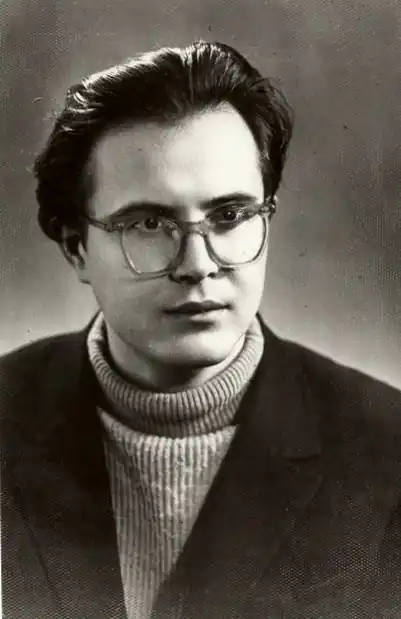
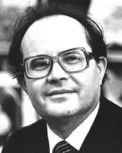

Володимир Дрозд
(1939 р. нар.)
Володимир Дрозд двадцятитрирічним юнаком видав першу книжку новел та оповідань ("Люблю сині зорі", 1962) і одразу був прийнятий до Спілки письменників. Розпочавши літературну працю як новеліст і продовжуючи вряди-годи друкувати новели, В. Дрозд поступово утверджується як автор повісті й роману. Дещо осібно стоять у творчості письменника романи-біографії "Ритми життя" (1974), "Дорога до матері" (1979) — про родину академіка О. Богомольця, "Добра вість" (1907) — про Ювеналія Мельникова, "малороса" із Чернігівської губернії, "російськопідданого", одного із перших марксистів в Україні Усе написано неіндивідуалізованим словом підручника з історії із обов'язковими для літературного твору "художніми картинками". Але ці, можна сказати, випадкові — тематично й жанрово — для прозаїка романи зовсім не випадкові в психологічному, світоглядному плані: загалом усі його твори можна поділити на дві групи — такі, що їх міг би написати "хтось інший", і такі, що їх міг написати тільки В. Дрозд. З одного боку — щось бадьореньке й оптимістичне про колгоспне село (повісті "Так було, так буде", "Новосілля", 1987), про невсипущу справедливість радянської юриспруденції ("Інна Сіверська, суддя", 1983), про тих же героїв-революціонерів. З іншого боку — твори, які міг написати тільки В. Дрозд і які не мали "зеленої вулиці": повість "Вовкулака", про всяк випадок переназвана у видавництві на "Самотнього вовка", йшла до читача дванадцять років, "Ирій" — шість; опублікований лише в журнальному варіанті роман "Катастрофа" (Вітчизна. 1968. № 10) — понад двадцять і т. ін. За глибиною хвилююче-достовірного самоаналізу персонажа-письменника з роману "Спектакль" Ярослава Петруні, роздвоєного на "чиновника від літератури" та справді талановитого літератора, який через брак характеру, почуття обов'язку перед людьми, егоїзм, життєві обставини не зміг себе реалізувати, виразно прочитується проблема роздвоєння, розщеплення творчої свідомості самого автора. Біографія письменника — "син колгоспника з глухого поліського села" відразу після школи став журналістом у районній газеті, закінчив університет, доріс до відомого столичного письменника — увійшла в його твори як продуктивний літературний прийом, стійкий архетип його творчості. Основні твори — повісті й романи "Маслини" (1967), "Семирозум" (1967), "Ирій" (1974), "Катастрофа" (1968), "Спектакль" (1985), "Листя землі", багато новел — зображують, повторюють, доосмислюють поліську Йокнапатофу, малий всесвіт, що має всі ознаки великого світу, із центром у Пакулі. Якщо котрийсь із героїв і виривається поза межі цього світу, то за підтвердженням свого буття вертається назад, у Пакуль. Пакульський світ герой Дрозда, виходячи поза свої межі — відлітаючи в Ирій (Ирієм називається перша зупинка "відльоту" автобіографічного героя, містечко, куди його, підлітка, забирають дядько та тітка закінчувати школу), — чи то Андрій Литвин ("Маслини"), чи Петруня ("Спектакль"), чи Харлан і Шишига ("Самотній вовк", 1983) — бере із собою хоч би й не хотів: він, світ, Край, навічно вкарбований у його душу й пам'ять. Кожен вертається у Пакуль — фізично чи подумки, як вертаються птахи з вирію, як вертається туди сам автор у своїх творах. Пакуль — місце, звідки бере початок і де завершується містерія людського життя Дроздового героя, едемський сад його невинності (гріхопадіння відбувається поза межами світу Пакуля) і долина плачу, каяття та спокути, куди вертається його душа на страшний суд совісті. Ця сповідальність, що руйнує захисні — словесні, поведінкові — стіни між людиною і світом, що анатомує, "роздягає" людську душу, відкриваючи світові, всевишньому всі її порухи, нерви, пристрасті, відкриває і загальний психологічний стан даної людської душі. У прозі В. Дрозда це передовсім всезагальний стан роздвоєння. Він розчахує на кардіограмі часу саме 70-х років і авторську свідомість, і свідомість героїв — роздвоєння між селом і містом, між голодним дитинством і ситим благополуччям зрілого віку, між щирістю і вдаваністю, грою, між правдою й правдоподібністю, талантом і графоманством — на дві душі, віддзеркалюючи психологію абсурдного суспільства "розвиненого соціалізму", психологію справді нової людини, яку виховали комуністичні експериментатори. Герої В. Дрозда, уродженці затурканого й безправного колгоспного світу, мріючи вирватись із нього, вступити у світ феодальний, "вищеньких", намагалися доп'ясти передовсім його речові знаки, як віхи сходження вгору, — маслини, галіфе, портфель, шапку, чоботи, машину, імпортний одяг. Беззастережно приймали і "моральні" закони світу номенклатури: вчились уміло брехати, знали, як і про що треба писати, щоб бути опублікованими, тощо. Для цього мусили зрікатися себе вчорашнього, справжнього, що й породжувало трагедію роздвоєння душі, а відтак — отруєння її лицемірством, брехнею, вдаваними пристрастями. В. Дрозд ставить у своїй прозі проблему екології душі, часто занедбаної до такої межі, коли вона вже не здатна самоочиститися. Герої Дрозда постійно грають як актори, світ для них — сцена в театрі — чи приміщення установи із сходами нагору — низ і верх ("Самотній вовк"), чи плантація буряків поблизу рідного села ("Спектакль"), і життя їхнє — спектакль, де і смерть — лише перевдягання за кулісами життєвого театру. Власне, такою і є концепція життя в прозі В. Дрозда — безконечний спектакль, містерія життя людства, "згідно із релігійними уявленнями: невинність, гріхопадіння, праця в поті чола, борсання серед дрібниць, плутанина ідей, бажань і — страшний суд і каяття, і спокута" ("Спектакль"). Вони так викладаються на ролі, зосереджують на них усі внутрішні ресурси, що приростають до них, втративши здатність до особистісного, інтимного, щирого спілкування. Є в нього й герої, які не грають, живуть, — це сусід Сластьона, тракторист Микола ("Балада про Сластьона", 1983), Великий Механік і Прагнімак ("Самотній вовк"), дядько Кирило ("Маслини"), "принципові і вперті світочі духу, знані і любимі трудовим людом" — справжні письменники ("Спектакль"). Та надто вже вони пласкі й невиразні, порівняно з типовими дроздівськими героями, просто стафажні фігури в глибині сцени, де розігрується спектакль життя типових героїв. Осібно стоїть Галя Поночівна, українська мати з повісті "Земля під копитами" (1980), написаної в іншій манері — інший життєвий матеріал, не тільки в часі, а й психологічно — війна; інша поетика, інша концепція життя й людини. Безліч раз фашисти вбивали Поночівну, та вбити не могли, вона й умерти не мала права, бо діти і "стільки роботи на одні руки", та й треба комусь і після війни порати землю й квітчати. Реальна і водночас легендарна Поночівна уособлює незнищенність нашого народу й материнської любові, вічне материнське начало життя. Із творами В. Дрозда, такими, як повісті "Ирій", "Замглай", "Балада про Сластьона", "Самотній вовк", новели "Сонце", "Три чарівні перлини", "Білий кінь Шептало", зв'язані здобутки химерної прози, українського варіанту модного в літературі 70-х міфологізму. Треба сказати, художня умовність у В. Дрозда цілком оригінальна, несилувана, вигадливо-розкута, виростає із традицій національної "химерії" та демонології — і літературної (В. Дрозд підкреслює вплив на нього Гоголя й Лесиної "Лісової пісні"), і фольклорної — казки, легенди, переказу, бувальщини, уламків слов'янської міфології, яка донині тримається "поліських лісів та боліт із усім їхнім чортовинням". Густа міфологічність, але іншого, більше філософського плану, пронизує всі клітини відзначеного Шевченківською премією роману "Листя землі". Оригінальний В. Дрозд і в своїй автобіографічній "повісті-шоу" "Музей живого письменника..." (1994). І все ж, за словами письменника, його "завжди цікавило, що сказати, а не як сказати", стиль, форма — похідне, а головне для нього в літературному творі "не література, а душа". Власне, людська душа, стан душі сучасної людини, саме трагедія деформації, роздвоєння душі радянського українця, найчастіше, як сам автор, інтелігента в першому поколінні, хворобливого розщеплення її в умовах хворого суспільства, а також її екологія, порятунок душі і є основним предметом дослідження, головним героєм прози В. Дрозда. С Андрусів Історія української літератури ХХ ст. — Кн. 2. — К.: Либідь, 1998.